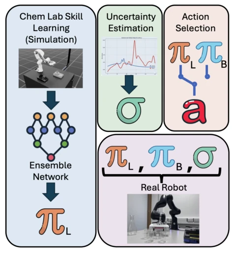
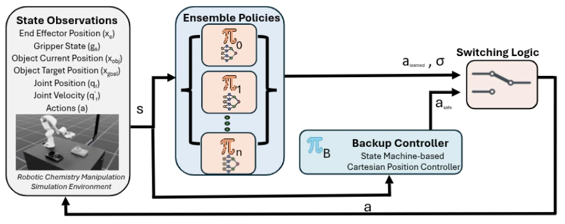
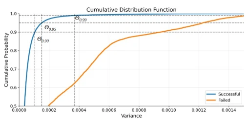

SAFE-CHEM equips robots in chemical laboratories with a "self-doubt" radar, which is quite clever. Traditional single-model strategies often confidently crash into walls when encountering situations unseen in the training set, whereas SAFE-CHEM uses ensemble learning to calculate variance to quantify this "ignorance", and decisively switches back to a rigid rule-based controller once uncertainty exceeds the threshold. This "run if possible, stop if not" hybrid strategy is indeed much more reliable than the blindly confident single model. However, a critique is: the backup controller it relies on consists of hard-coded rules, lacking flexibility, and gets stumped when encountering complex failures not covered by rules (e.g., a bottle placed crookedly but not triggering the threshold), still relying on force feedback to save the situation. Additionally, although the zero-shot sim-to-real transfer was successful, robustness under real chemical reagent contamination or lighting changes was not mentioned, which is somewhat worrying. Overall, this is a practical safety patch, but still far from true "intelligence".
When deploying autonomous robots in chemical laboratories, the biggest hurdle is not learning actions, but learning "when not to move". Existing imitation learning (IL) and reinforcement learning (RL) methods can master fine manipulations, such as powder weighing or liquid pouring [7], but often lack perception capabilities for out-of-distribution (OOD) states. When robots encounter new equipment or unexpected reaction dynamics not present in the training data, traditional models cannot distinguish between data insufficiency (epistemic uncertainty) or environmental noise (aleatoric uncertainty), leading to overconfident predictions and catastrophic failures [10]. Although existing research has attempted to use random network distillation [17] or conformal prediction [13] to detect failures, these methods often rely on visual features, susceptible to interference from glassware reflections, or are sensitive to temporal drift, and are mostly reactive rather than proactive. SAFE-CHEM aims to address this pain point by quantifying model uncertainty to proactively take control before a disaster occurs, filling the gap in safety intervention mechanisms in existing systems.
方法Method
SAFE-CHEM 的核心是一个不确定性感知的混合控制架构，流程分为训练、量化、切换和部署四个阶段。首先，在仿真环境中训练一个基于 RNN 的模仿学习策略集成（Ensemble of BC-RNNs），利用行为克隆从专家演示中学习复杂操作。其次，在线推理时，系统并行运行多个独立的策略模型，通过计算它们预测动作的方差（ensemble variance）来量化认知不确定性（epistemic uncertainty）。方差越大，说明模型对当前状态越“迷茫”。接着，利用核密度估计（KDE）对成功轨迹的方差分布进行建模，设定基于分位数的置信阈值。当在线监测到的方差持续超过该阈值（通过滑动窗口峰值检测算法确认），系统判定为高风险状态，自动触发切换逻辑，将控制权从学习策略（πL）无缝移交至确定性的规则备份控制器（πB）。最后，该框架支持零样本仿真到真实（Sim-to-Real）迁移，直接部署在物理机械臂上。这种设计巧妙地平衡了学习策略的灵活性和规则控制的安全性，无需预先定义所有失败模式即可实现主动防御。
The core of SAFE-CHEM is an uncertainty-aware hybrid control architecture, with the process divided into four stages: training, quantification, switching, and deployment. First, an ensemble of RNN-based imitation learning policies (Ensemble of BC-RNNs) is trained in a simulation environment, utilizing behavior cloning to learn complex operations from expert demonstrations. Second, during online inference, the system runs multiple independent policy models in parallel, quantifying epistemic uncertainty by calculating the variance of their predicted actions (ensemble variance). The larger the variance, the more "confused" the model is about the current state. Next, kernel density estimation (KDE) is used to model the variance distribution of successful trajectories, setting a confidence threshold based on quantiles. When the variance monitored online continuously exceeds this threshold (confirmed by a sliding window peak detection algorithm), the system judges it as a high-risk state and automatically triggers switching logic, seamlessly transferring control from the learning policy (πL) to the deterministic rule-based backup controller (πB). Finally, the framework supports zero-shot sim-to-real transfer, deployed directly on physical robotic arms. This design cleverly balances the flexibility of learning policies and the safety of rule-based control, achieving proactive defense without pre-defining all failure modes.

Fig. 1: An overview of our method SAFE-CHEM, which consists of four stages: (1) training an ensemble-based imi- tation learning policy (πL) in simulation for robotic chemistry manipulation tasks; (2) estimating the epistemic uncertainty σ through ensemble variance; (3) action selection that monitors σ to gate control between πL and a fail-safe rule-based backup robot controller (πB); and (4) real-world demonstration on a robotic system using zero-shot task transfer.

Fig. 2: Overall system block diagram. Our framework demonstrates how a learned ensemble of RNN-based policies provide real-time action predictions (alearned) and epistemic uncertainty quantification (σ). A deterministic state-machine-based backup controller (πB) uses an explainable state machine for safe task completion. The switching logic autonomously selects the appropriate control signal (asafe) based on a calibrated uncertainty threshold.
实验Experiments
研究者在 IsaacLab 仿真环境中评估了三种典型的化学操作任务：提升（Lift）、抓取放置（Pick and Place）和插入（Insertion）。实验对比了不同集成规模（1, 5, 10, 15 个模型）下的任务成功率，发现集成策略显著优于单模型，且存在最优规模（如 Lift 任务为 10 个）。在切换逻辑校准实验中，通过 KDE 分析成功与失败轨迹的方差分布，确定了最佳置信阈值（如保守的 θ0.90）和滑动窗口参数。结果显示，引入不确定性感知切换机制后，混合策略在所有任务中的成功率均显著提升，且关键安全违规（如打翻容器）率大幅下降。特别是在高难度的插入任务中，保守阈值有效减少了因策略不稳定导致的失败。最后，在 Franka Production 3 机械臂上进行了零样本真实部署，验证了框架在物理环境中的泛化能力和鲁棒性，无需额外的微调。
Researchers evaluated three typical chemical manipulation tasks in the IsaacLab simulation environment: Lift, Pick and Place, and Insertion. Experiments compared task success rates under different ensemble sizes (1, 5, 10, 15 models), finding that ensemble strategies significantly outperform single models, and an optimal size exists (e.g., 10 for the Lift task). In switching logic calibration experiments, the variance distribution of successful and failed trajectories was analyzed via KDE, determining the optimal confidence threshold (e.g., conservative θ0.90) and sliding window parameters. Results showed that after introducing the uncertainty-aware switching mechanism, the success rate of the hybrid strategy significantly improved across all tasks, and the rate of critical safety violations (e.g., spilled containers) decreased significantly. Especially in the high-difficulty Insertion task, the conservative threshold effectively reduced failures caused by policy instability. Finally, zero-shot real deployment was conducted on the Franka Production 3 robotic arm, verifying the framework's generalization ability and robustness in physical environments without additional fine-tuning.

Fig. 4: Confidence thresholds calculated at the θ0.90, θ0.95 and θ0.99 bounds.